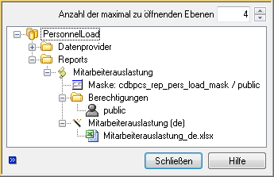

Reportvorlagen erstellen¶
Die Erstellung neuer Reports erfolgt mit Unterstützung der Excel Kopplung in drei Schritten:
Datenquelle auswählen
Die Auswahl der Datenquelle erfolgt mit der Kopplungsfunktion [ Datenquelle auswählen ] .
Es wird ein Dialog zur Auswahl einer im System konfigurierten Datenquelle angezeigt.
Excel: PowerReports - Auswahldialog für Datenquellen
Datenbindung herstellen und Layout gestalten
Nach Auswahl der Datenquelle wird das zugehörige XSD Schema geladen und angezeigt. Das XSD Schema wird zur Herstellung der Datenbindung verwendet. Die Datenbindung wird via Drag&Drop von Schemaelementen an die gewünschte Position in das Excel Sheet hergestellt. Dabei können einzelne Attribute aber auch vollständige Objekte auf einmal positioniert werden.
Excel: PowerReports - Datenbindung via Drag&Drop herstellen
Dokument als Reportvorlage speichern
Abschließend muss der neu erstellte Report als Reportvorlage zur Datenquelle gespeichert werden. Dies erfolgt durch die Kopplungsfunktion [ Vorlage anlegen ] .
Reportvorlagen werden im System direkt als Dateien an den jeweiligen Report gehängt. Dabei können mehrere sprachspezifische Vorlagen für ein und den gleichen Report erstellt werden (siehe Erstellung sprachspezifischer Reports ).
Bemerkung
Da Reportvorlagen nicht als eigene Dokumente angelegt werden sondern direkt an die Reports geheftet, können die Reportvorlagen nicht im Nachhinein über die [ Laden ] Funktion der Kopplung zum erneuten Bearbeiten geöffnet werden. Zum erneuten Bearbeiten können sie entweder im Client (z.B. in der Projektübersicht) oder nach der Ausführung eines Reports über die [ Vorlage bearbeiten ] Funktion geöffnet werden.
Mit Abschluss der Dateienneuanlage wird die Reportvorlage automatisch der Datenquelle zugeordnet. Der Report ist anschließend sofort in Abhängigkeit von der Datenquelle entweder kontextfrei oder im Kontextmenü eines entsprechenden Objektes für den Reportersteller aufrufbar.
Alle zu einer Datenquelle erstellten Reports sind in dem Ordner Reports einer Datenquelle gelistet. Dort können die Berechtigungen, ein ggf. vorzuschaltender Dialog und der Reporttitel angepasst werden. Abbildung 32 zeigt exemplarisch den Report Projektportfolio zur gleichnamigen Datenquelle. Zu einer Datenquelle können beliebig viele Reports unterschiedlicher Ausprägung und in jeweils unterschiedlichen Sprachversionen erstellt werden.
Excel: PowerReports - Report zur Datenquelle
Der Reporttitel und ein ggf. vorzuschaltender Dialog können im Datenblatt der Vorlagenzuordnung zur Datenquelle konfiguriert werden. Das Register
Berechtigungensteuert die Sichtbarkeit von Reports im Reportauswahldialog. Der Reportersteller wird bei der Neuanlage automatisch durch eine entsprechende Zuordnung berechtigt. Andere Anwender können den Report erst dann aufrufen, wenn diese hier zusätzlich durch eine Rollenzuordnung oder durch direkte Personenzuordnung berechtigt werden.Desweiteren können in dem Datenblatt noch diverse Einstellungen zur Art der Reporterzeugung und dessen Darstellung vorgenommen werden (siehe Auswahlkonfiguration ).
Reportdialoge erstellen¶
Einem Report kann optional ein Dialog vorgeschaltet werden, der Parameter vom Anwender abfragt, die beim Aufruf eines Reports an die Datenprovider weitergegeben werden und dort die Datenermittlung beeinflussen können. Dies ist immer dann sinnvoll, wenn der Anwender das Reportergebnis durch eigene Eingaben beeinflussen können soll. Beispielsweise zur Eingabe eines zu betrachtenden Zeitraumes oder anderer filternder Bedingungen in Verbindung mit SimpleQuery Datenprovidern.
Excel: PowerReports - Reportdialog zur Abfrage von Projekten
Die Parameter werden durch Namenskonvention für die Attributnamen der Maskenfelder an Datenprovider adressiert: <Providername>-<Attributname>, wobei die Attributnamen jedoch keine Großbuchstaben enthalten dürfen. Das Feld Relation der Maskenfeldkonfiguration bleibt leer.
Excel: PowerReports - Adressierung der Dialogfelder an Datenprovider als Parameter
Die Möglichkeiten zur Parametrisierung der universellen Standardprovider durch Dialoge finden Sie in Providertypen im Detail zum jeweiligen Providertyp.
Bemerkung
Wenn Felder in Reportdialogen geändert, gelöscht oder hinzugefügt werden, ist darauf zu achten, dass in den Reportvorlagen, welche den jeweiligen Dialog verwenden, das XML Schema aktualisiert werden muss.
Fernerhin kann jeder Dialog um die Möglichkeit erweitert werden, sämtliche Vorbelegungen zu speichern, wodurch bei erneuten Reportausführungen sich eventuell wiederholende Eingaben vermieden werden können. Um dies zu erreichen, muss derjenige Dialog um 3 Elemente erweitert werden: die 2 (versteckten, aber den jeweiligen Report identifizierenden) Textfelder cdbxml_source_name und cdbxml_report_title ; 1 Button welcher bei Betätigung die Komponente cdbxml_set_defaults auslöst (siehe Excel: PowerReports - Speichern der Eingabewerte von Reportdialogen ).
Excel: PowerReports - Speichern der Eingabewerte von Reportdialogen
Darstellung hierarchischer Daten¶
In PowerReports können hierarchisch organisierte Daten entsprechend dargestellt werden. Typische Beispiele für hierarchische Daten sind Produktstrukturen oder Aufgabenstrukturen.
Voraussetzung für die hierarchische Darstellung ist, dass der Datenprovider die Hierarchieinformation in dem Attribut
cdbxml_level bereitstellt. Ist diese Voraussetzung erfüllt, können die Hierarchieebenen im PowerReport
auf- und zu geklappt und für eine bessere Übersicht farblich codiert und eingerückt werden.
Zur Erstellung einer hierarchisch organisierten Liste muss das Attribut cdbxml_level in der Liste
enthalten sein. Idealerweise wird dieses Attribut am Ende des Listekopfes angefügt und mit Abschluss der Layoutarbeiten
durch Setzen der Spaltenbreite auf 0 unsichtbar gesetzt. Ist das Attribut cdbxml_level in der Liste
enthalten, wird die Ergebnistabelle automatisch, wie in folgender Abbildung am linken Rand dargestellt, mit Excel Funktionalität
gegliedert.
Excel: PowerReports - Hierarchische Darstellung am Beispiel Produkstruktur
Diese Gliederung kann zusätzlich durch Einrückung einer beliebigen Spalte und durch farbliche Codierung hervorgehoben werden.
Hierfür muss jeweils ein spezieller Ausdruck in die Spaltenbeschriftung des cdbxml_level Attributes
aufgenommen werden. Die Ausdrücke müssen dabei durch einen Doppelpunkt voneinander getrennt werden.
Einrückung einer Spalte:
indent(column)
Farbliche Codierung:
colorize(<rgb_start_color>),(<rgb_offset>)
column gibt den Spaltenindex an, in welchem die Einrückungen ausgeführt werden.
rgb_start_color gibt dabei die Startfarbe als RGB Farbcode für die Hierarchiebene 0 an. Für die
darunterliegenden Ebenen wird die Zeilenfarbe durch addieren des rgb_offsets ermittelt.
Excel: PowerReports - Hierarchische Darstellung mit Einrückung der 1. Spalte und Farbcodierung
Nur Einrückung der 1 Spalte:
level:indent(1)
Einrücken der 1.Spalte + blaue Farbcodierung:
level:colorize(230,230,255),(20,15,12):indent(1)
Der Ausdruck level:colorize(230,230,255),(20,15,12):indent(1) ergibt beispielsweise folgende Darstellung.

Excel: PowerReports - Hierarchische Darstellung mit Einrückung der 1. Spalte und Farbcodierung
Bemerkung
Standardmäßig werden in Excel Gruppierungen mit der Einstellung ‘Hauptzeilen unter Detaildaten’ angezeigt. In der Regel wird sich der Anwender diese jedoch wie in obigem Beispiel über den Detaildaten wünschen. Daher sollte darauf geachtet werden, dass bei der Erstellung der PowerReport-Vorlage diese Einstellung deaktiviert wird ( ).
Excel: PowerReports - Hierarchische Darstellung - Gruppierungseinstellungen
Darstellung dynamischer Spaltentitel in Listen¶
In PowerReports ist es möglich die Spaltentitel von Listen, welche durch Provider gefüllt werden, dynamisch mit Werten zu belegen. Als Beispiel dient der folgende PowerReport:

Excel: PowerReports - Darstellung dynamischer Spaltentitel
Dieser PowerReport zur Anzeige der Mitarbeiterauslastung zeigt in einer Liste einen durch den Benutzer vor der Generierung angegebenen Zeitraum. Im Nachhinein kann in dem rot markierten Feld der Zeitraum geändert und der PowerReport aktualisiert werden. Die Spaltentitel sind somit abhängig vom Zeitraum, da sie die jeweiligen Kalenderwochen anzeigen. Realisiert wird dies durch Hinzufügen eines weiteren Providers (‘PersonnelLoadWeekly_Label’), welcher bei jedem Erstellen/Aktualisieren eines PowerReports die jeweils aktuellen Spaltentitel liefert. Damit die Excel-Kopplung diese Werte finden, auslesen und in die Liste übertragen kann, müssen sie in die Zeile direkt über der Liste gelegt werden. Im Abschluss muss diese Zeile in der Vorlage versteckt werden.

Excel: PowerReports - Darstellung dynamischer Spaltentitel (Layout)
Darstellung dynamischer Bildinhalte¶
In PowerReports hat man die Möglichkeit, sowohl einfache Felder wie auch Listenfelder mit Image-Dateien (in allen von Excel unterstützen Formaten) zu füllen. Welche Bilder man bereitstellen kann und wie man diese bereitstellt, wird im Abschnitt Hinzufügen von Bilddateien beschrieben. Damit die bei der Reportgenerierung dynamisch geladenen Bilddateien korrekt eingefügt werden bzw. eine gewünschte einheitliche Größe oder Position innerhalb der Zelle bekommen, muss in der Reportvorlage ein entsprechendes Musterbild eingefügt werden. Damit dieses Bild von der Kopplung als Muster erkannt wird, muss entweder der Bildname mit “cdb_image” oder der Attributname, welcher dem zugehörigen Feld über den Datenprovider zugewiesen wurde, mit “cdbxml_image” beginnen. Des weiteren können bestimmte Formatierungsregeln in der Alternativtextbox im Eigenschaftendialog des jeweiligen Bildes festgelegt werden.
Wichtig
Das Vorlagebild muss sich mit seiner linken oberen Ecke eindeutig innerhalb der jeweiligen Zelle befinden, ansonsten verknüpft Excel das Bild mit einer anderen Zelle und die dynamischen Bilder werden u.U. nicht eingefügt.
In bestimmten Fällen kommt es bei dynamischen Bilderlisten zu unerwarteten Ergebnissen (z.B. verzerrte oder unsichtbare Bilder). Dies betrifft zur Zeit vornehmlich Excel 2010. Vermeiden lässt sich dies in der Regel dadurch, dass die Bildvorlage so in der Zelle platziert wird, dass sie (bzw. die später eingefügten Bilder) nicht über die Zellgrenze hinausragen. Insofern bei einem PowerReport ein anschließendes Filtern oder Sortieren von Listen gewünscht ist, welche dynamische Bilder enthalten, müssen die betroffenen Bildvorlagen innerhalb dieser Liste mit der Eigenschaft “Von Zellposition und -größe abhängig” formatiert werden. Andernfalls kann es bei einer filter- oder sortierbedingten Listenzeilenbewegung zu falschen Bildergebnissen kommen.
Wichtig
Dynamische Bildinhalte werden zur Zeit in komplexen Reports nicht unterstützt.
Formatierungsmöglichkeiten:
- KeepWidth : Die Breite des Musterbildes wird auf den dynamischen Bildinhalt übertragen. Diese Variable ist intern standardmäßig aktiviert, da in der Regel ein Einhalten der Spaltenbreite erwünscht ist.
- KeepHeight : Die Höhe des Musterbildes wird auf den dynamischen Bildinhalt übertragen.
- MinBorderHeight : Der Mindestabstand zwischen Bildhöhe und Zellhöhe. Ein Wert von “1” garantiert z.B., dass beim Füllen von ‘zu hochformatigen’ Bildern die jeweilige Zeilenhöhe vergrößert und dadurch ein Überschneiden von Bildinhalten vermieden wird. Höhere Werte wie “20” oder “30” sorgen für einen optischen Rand zwischen Bild und Zelle.
- MinBorderWidth : Der Mindestabstand zwischen Bildbreite und Zellbreite.
- CenterWidth : Der dynamische Bildinhalt wird innerhalb der Zelle horizontal zentriert.
- CenterHeight : Der dynamische Bildinhalt wird innerhalb der Zelle vertikal zentriert.
Wichtig
Der gesamte Formatierungstext muss mit dem Präfix “cdb:” beginnen.
Excel: PowerReports - Dynamische Bildinhalte (Musterbild)
Formatierungsbeispiel 1: “cdb:KeepHeight=1,CenterWidth=1”
Excel: PowerReports - Dynamische Bildinhalte (Beispiel 1)
Formatierungsbeispiel 2: “cdb:MinBorderHeight=1,KeepWidth=1”
Excel: PowerReports - Dynamische Bildinhalte (Beispiel 2)
Darstellung komplexer Zeilen bei Multi-Export Datenquellen¶
Mit Microsoft Excel ist es nicht möglich, Listen bestehend aus komplexeren Zeilen zu erstellen. Eine Listezeile besteht immer nur aus genau einer Zeile Excel Zellen. Häufig wird jedoch die Darstellung komplexerer Daten in Listenform benötigt. Die folgende Darstellung einer Artikelliste mit jeweils einer Liste der zugeordneten Dokumente ist beispielsweise allein mit Excel Listen nicht realisierbar. Stattdessen müssen derartige Listen durch aneinanderfügen eines sich wiederholenden Layouts erstellt werden. In folgender Abbildung ist ein solches komplexes Listenelement rot gekennzeichnet. Dieses Element wiederholt sich beliebig häufig und bildet dadurch eine komplexe Liste.

Excel: PowerReports - Komplexe Zeilen am Beispiel Artikelliste
Das Layout und die Datenbindung für ein komplexes Listenelement muss auf einem speziellen Template Sheet mit dem fest vorgegebenen
Namen cdb_template erfolgen. Auf dem Template Sheet wird genau eine komplexe Zeile modelliert.
Bei der Reportausführung werden die komplexen Zeilen einer Datenquelle in einzelne XML Dateien exportiert. Diese werden durch die Excel Kopplung anschließend einzeln in das Template Sheet importiert. Zwischen den Importvorgängen wird das Ergebnis vom Template Sheet in das Zielsheet kopiert.
Excel: PowerReports - Definition einer komplexen Zeile
In der oberen linken Zelle des Template Sheets kann das Zielsheet und eine Zielzelle angegeben werden. Diese Zieladresse beschreibt das Ziel für die obere linke Zelle der 1. zu kopierenden komplexen Zeile. Alle weiteren Zeilen werden von dort ausgehend fortlaufend aneinandergehängt. Wird keine Zieladresse angegeben, wird als Startzelle die obere linke Zelle des ersten im Workbook enthaltenen Sheets verwendet.
Das PowerReports Framework erkennt Daten, die als komplexe Zeilen exportiert und importiert werden müssen, automatisch anhand der Ergebnis- und Aufrufkardinalitäten verknüpfter Datenprovider.
Eine Multi-Export Konfiguration liegt immer dann vor, wenn der übergeordnete Provider als Ergebnis eine Liste liefert (Ergebniskardinalität N) und ein zugeordneter Subprovider die Aufrufkardinalität 1 hat, der Subprovider also Daten liefert, die sich auf einzelne Listenelemente des übergeordneten Providers beziehen.
Excel: PowerReports - Schema Multi-Export
Liefert beispielsweise ein SimpleQuery Provider eine Liste von Artikeln und ein Relationship Provider liefert als zugeordneter Subprovider die zugeordneten Dokumente, so liegt eine Konfiguration vor, die ausschließlich als komplexe Liste in Excel darstellbar ist.
Ein zugeordneter GroupBy Provider würde hingegen keine Multi-Export Konfiguration darstellen, da GroupBy Provider mit dem gesamten Ergebnis des übergeordneten Providers aufgerufen werden, also die Aufrufkardinalität N haben. GroupBy Provider liefern keine Ergebnisse, die sich auf einzelne Listenelemente des Parent Providers beziehen sondern aggregierte Informationen, die sich ausschließlich auf die gesamte Liste beziehen.
Darstellung von Langtexten¶
Für Zeilen, in welchen Zellen ausschließlich oder teilweise mit Langtexten gefüllt werden, muss die Eigenschaft Zeilenumbruch ” der kompletten Zeile gesetzt sein, damit die Kopplung diese erkennen und deren Zeilenhöhe automatisch anpassen kann.
Falls Langtexte in Zellen angezeigt werden sollen, welche aus mehreren Verbundzellen bestehen, dann lässt sich die korrekte Darstellung nur über einen Umweg erreichen:
- Die eigentliche Verknüpfung mit dem Langtext-Attribut der Datenquelle darf nicht mit der gewünschten Ziel-Zelle erfolgen, sondern mit einer am Ende versteckten Zelle , welche sich auf der gleichen Zeile befindet.
- Damit die Langtexte nicht abgeschnitten oder mit anfänglichen Leerzeilen dargestellt werden, muss diese Helfer-Zelle absolut die gleiche Breite besitzen.
- Die Eigenschaft “Zeilenumbruch ” muss für die komplette Zeile gesetzt sein.
Nachbearbeitung fertiger PowerReports durch VBA¶
Manchmal möchte man programmtechnisch über VBA und das Excel-Object-Model bestimmte Dinge erledigen, nachdem ein Report von der Kopplung fertig gestellt wurde (z.B. um gefüllte Diagramme korrekt zu formatieren, oder um etwas zu fokusieren). Zu diesem Zweck sucht die Kopplung in der Excel-Mappe eine VBA-Funktion mit einem bestimmten Namen. Wird diese gefunden, wird sie jeweils nach Fertigstellung/Aktualisierung eines Reports aufgerufen.
Hinzufügen einer VBA-Funktion zur automatisierten Nachbearbeitung fertiggestellter PowerReports
- In Excel den VBA-Editor öffnen.
- In der PowerReport-Vorlage ein Modul einfügen.
- Eine Funktion mit dem Namen ‘CDBReportDone’ einbauen:
Public Sub CDBReportDone()
' ...
End Sub
Bemerkung
Falls die Sicherheitseinstellungen in Office so eingestellt sind, dass nicht digital signierte Makros automatisch deaktiviert werden, müssen die Report-Vorlagen mit einem Zertifikat signiert werden, bevor sie im System gespeichert werden. Diejenigen mit dem System gelieferten Standard-PowerReports, welche VBA-Code zur Nachbearbeitung enthalten, sind bereits mit einem für die Contact GmbH ausgestelltem Zertifikat und unter Verwendung eines Zeitstempel-Servers signiert. Um eigene Report-Vorlagen oder geänderte Standard-Report-Vorlagen mit einem eigenen Zertifikat und unter Verwendung eines Zeitstempel-Servers zu signieren, müssen manuell folgende Einträge in der Registry gesetzt werden, da sich der Zertifikats-Zeitstempel-Server nicht über die Office-Oberfläche konfigurieren lässt:
Windows Registry Editor Version 5.00
[HKEY_CURRENT_USER\Software\Microsoft\VBA\Security]
"TimeStampURL"="http://timestamp.some-ca.com/scripts/timestamp.dll"
"TimeStampRetryCount"=dword:00000005
"TimeStampRetryDelay"=dword:00000005
Falls das digitale Signieren ohne Zeitstempel erfolgt, erlöscht die Gültigkeit der Signatur nach Ablauf des Zertifikates. Bei Verwendung eines Zeitstempels ist die Signatur zeitlich unbegrenzt gültig.
Erstellung persönlicher Reports¶
Anwender haben die Möglichkeit, das Layout und die Datenbindung eines aufgerufenen Reports direkt zu modifizieren und als persönlichen Report abzuspeichern. Die Erstellung eines persönlichen Reports kann also ad-hoc erfolgen, wenn dem Anwender das Reportergebnis nicht gefällt oder für seine Zwecke unpassend ist.
Die Speicherung des modifizierten Reports als persönlichen Report erfolgt mit der Excel Kopplungsfunktion . Der modifizierte Report wird durch Aufruf dieser Funktion als neue Reportvorlage zur zugrundeliegenden Datenquelle angelegt und für den ausführenden Anwender berechtigt. Andere Anwender haben keinen Zugriff auf diesen Report, könnten aber durch den Administrator durch Rollen- und Personenzuordnungen nachträglich berechtigt werden.
Excel: PowerReports - Persönlicher Report am Beispiel Mitarbeiterauslastung
Bei der Erstellung eines persönlichen Reports wird der ggf. vorgeschaltete Reportdialog vom ursprünglichen Report übernommen. Die Änderung des Reportdialogs durch Anwender ist nicht vorgesehen.
Erstellung sprachspezifischer Reports¶
Der Gestalter eines PowerReports hat die Möglichkeit eine bereits bestehende Reportvorlage für eine bestimmte Sprache anzupassen und anschliessend für den gleichen übergeordneten Report bereitzustellen, so dass die Anwender, welche diesen Report im Nachhinein ausführen, zwischen verschiedenen Sprachen wählen können. Falls man eine bereits angelegte Reportvorlage zum Bearbeiten öffnet und man hinterher [ Vorlage anlegen ] ausführt, bietet die Kopplung in einem Zwischendialog an, für bereits bestehende Reports eine sprachspezifische Reportvorlage anzulegen.
Excel: PowerReports - Report zur Datenquelle
Im darauf folgenden Dialog muss nur noch die Sprache und ein eindeutiger Titel gewählt werden.
Excel: PowerReports - Report zur Datenquelle
Besondere Hinweise¶
- Bei der Verknüpfung zwischen Listenattributen eines Providerschemas und den Excel-Zellen, d.h. wenn durch die Verknüpfung in dem Blatt Tabellenspalten entstehen, dann ist besonders darauf zu achten, dass die jeweilige Tabelle als Ganzes in logischer Reihenfolge von links nach rechts aufgebaut wird. Wenn im Nachhinein aus dieser Tabelle wieder Spalten gelöscht oder eingefügt werden, kann es unter Umständen zu Fehlern oder sogar Abbrüchen bei der Generierung der Reports kommen, da die Spalten dann eventuell nicht mehr eine gesamte Tabelle bilden, sondern mehrere nebeneinander stehende Tabellen. Ob jetzt eine Tabelle aus mehrerer Tabellen besteht, kann man an den kleinen Dreiecken am rechten unteren Rand einer jeden Tabelle erkennen. Vor allem seit Excel 2010 stößt man diesbezüglich oft auf Probleme, welche sich nur dadurch lösen lassen, dass Tabellen entfernt und von neuem aufgebaut werden.
- Das Füllen von Daten in Verbundzellen hinein kann zu unerwartetem Fehlverhalten führen. In solchen Fällen kann meist anstelle der Option “Zellen verbinden” auch einfach die Option “Textausrichtung > Horizontal > Über Auswahl zentrieren” verwendet werden.
- Für mit Datumsformaten oder benutzerdefinierten Zahlenformaten vorkonfigurierte Zellen darf nicht gleichzeitig die Option “Zeilenumbruch” gesetzt sein, da dies zu einem Verlust der Formatierung führen kann.
- Bei der Verknüpfung zwischen einem Schemaattribut und einer Zelle formatiert Excel die Zelle automatisch mit der zum jeweiligen Attributwertetyp passenden Zahlenkategorie. Da jetzt z.B. Zellen, welche später mit Gleitkommazahlen gefüllt werden sollen, von Excel automatisch der Zahlenkategorie ‘Standard’ zugewiesen werden, werden eventuelle Nachkommastellen nur dargestellt, wenn diese nicht gleich Null sind. Wenn ein fixes Nachkommastellenformat (0,00) erwünscht ist, muss man die Zahlenkategorie nach der Verknüpfung in ‘Zahl’ ändern.
- Falls in irgendeinem Sheet gleich mehrere dynamisch gefüllte Tabellen übereinander verwendet werden, dann darf eine untere Tabelle niemals breiter sein als die Tabelle(n) über ihr. Sie darf also höchstens genauso breit oder natürlich auch schmaler sein, da es sonst zu internen Problemen kommt, in Folge dessen die Reportgenerierung abbricht. Falls untere Tabellen also vom Design her doch breiter sein müssen, dann müssen die höheren Tabellen z.B. durch unsichtbare Dummy-Spalten verbreitert werden.